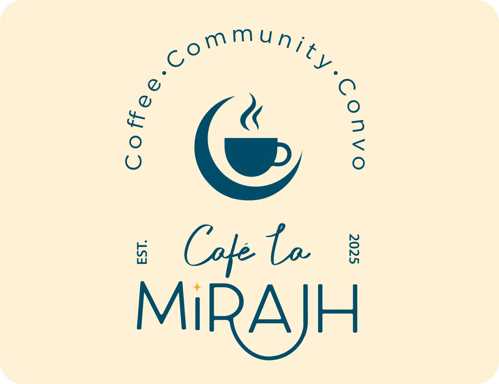
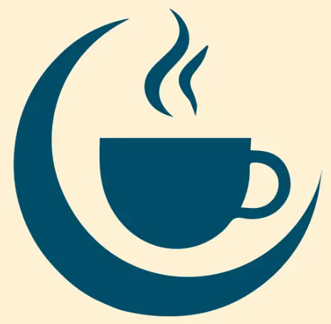

CAn operating café, several months old. Current revenue is about ₹1–1.5 lakh a month. The first objective is ₹4 lakh a month within three months of the programme; the later ambition is ₹8 lakh, once demand, capacity and profitability are validated. These are management objectives, not verified results.
| Monthly revenue | Guests / month | ≈ per day |
| ₹1.25 lakh (today) | ≈ 250 | 8 |
| ₹4 lakh | ≈ 800 | 27 |
| ₹8 lakh | ≈ 1,600 | 53 |
Illustrative only: uses the platform-listed ₹1,000 for two (≈ ₹500 per guest)[3][5], not actual spend data. Reaching ₹4 lakh needs roughly three times today’s guests, a higher spend per table, or both. Awareness alone will not close that gap. It needs a repeatable occasion.
VZomato and District both list rooftop seating and about ₹1,000 for two[3][5]. But at least three other rooftop venues are listed in Anna Nagar East and Shanthi Colony: On De Roof (₹800–1,100; 4.1 from 1,225 Zomato ratings)[10], the new Ibiza Rooftop Lounge & Bistro Café (₹700)[13], and The Living Room (≈₹2,100)[28].
VLa Mirajh has almost no public proof. District says it is “new” and has too few ratings to show a score. Zomato snapshots disagree, showing either 3.7 from 16 ratings or a single rating. The website and Instagram could not be verified, and the platforms disagree on what the café serves.
SA customer comparing options online has a weak reason to choose La Mirajh over rooftops with thousands of reviews.
Make La Mirajh Anna Nagar’s unhurried evening table for small friend groups (primary audience) and couples (secondary). The rooftop is the setting, coffee and comfort food are the product, PS5 is a social extra, and attentive hosting is the promise.
This builds on the café’s own idea, Coffee · Community · Convo[1], and moves away from the “affordable luxury / night-life” language, which neighbouring rooftops already own.

SFit with the manual. The venue facts support “accessible rooftop” and “comfort”. Nothing public yet supports “premium” or “luxury”: no reviews, no venue photography and no signature product. Several manual images appear to be illustrative stock rather than photos of the café.
Competitors were chosen by customer choice, not fame. A direct competitor overlaps on at least three of four factors: the same Anna Nagar micro-market, a ₹700–1,200 for-two band, café or comfort food, and an evening group or rooftop occasion. An indirect alternative competes for the same outing or spend with a different offer. Only exact Anna Nagar outlets were assessed.
| Outlet | Role | Core offer & known signatures | Cost for two* | Main occasion | Public proof | Observed friction |
|---|---|---|---|---|---|---|
| Café La Mirajh | Subject | Rooftop café, mixed menu; PS5 (client-stated) | ₹1,000 | Evening hangout (intended) | Too few ratings; snapshots conflict | Unclear menu identity |
| On De Roof[10] | Direct | Rooftop restaurant: biryani, Chinese, North Indian, kebabs | ₹800–1,100 | Rooftop dinners, celebrations | 4.1 · 1,225 Zomato; 4,463 Justdial | Uneven food quality and upkeep in some reviews |
| Ibiza Rooftop Lounge & Bistro[13] | Direct | Rooftop café: burgers, pizza, pasta, sandwiches | ₹700 | Casual rooftop meal | “New”; 3.7 dining (count not shown) | Thin evidence; cuisine tags conflict |
| The Board Room[15] | Direct | Board-game café: 500+ games, teas, pasta, paninis | ₹1,000–1,200 | Group play sessions | 4.5 · ≈1,300 Justdial | Slow game-guide attention at peak |
| Double Roti[19] | Direct | Burger café: Illegal Burger, Double Trouble, tacos | ₹950–2,000 | Food-led casual meal | 4.4 · 9,216 Justdial | Crowds, long waits, “overpriced” |
| VR Game Cafe[24] | Indirect | PS5 and VR gaming with burgers, pizza, shakes | PS5 ≈ ₹150/hr | Gaming sessions, birthdays | Not assessed | Daytime-weighted hours |
| India Brew House[26] | Indirect | Coffee, pasta, sandwiches, burgers | ₹450–700 | Everyday coffee, work | Not assessed | Closes 21:00 |
| The Living Room[28] | Benchmark | Rooftop restobar: cocktails, Italian–Indian | ≈ ₹2,100 | Premium nights, DJ, sport | 4.4 (one list) | Rooftop not always open |
*Platform “cost for two” figures disagree (Double Roti ranges from ₹950 to ₹2,000 across six listings), so they are shown as an indicative band, not precise prices. A like-for-like basket was not possible because La Mirajh’s item prices were unavailable. Other candidates considered: Gaming Garage and Midgard (gaming-first, overlap only on PS5)[31], and Flamingo Rooftop Lounge (too little evidence to assess).
Review evidence: Justdial’s review summary, one Zomato review and one January 2026 review surfaced in search. This is not a systematic sample.
Confidence is low. Treat Ibiza as a watch-list rival and re-check its reviews within 60 days.
VR Game Cafe[25]: PS5 at ≈ ₹150 an hour sets a public price for gaming. La Mirajh shouldn’t sell PS5 as an hourly product.
India Brew House[27]: daytime coffee and work at ₹450–700, closing at 21:00. This is the reference price for a casual coffee.
The Living Room[29] (benchmark): reviewers advise booking on Fridays. Booking is a signal of desirability.
What La Mirajh must prove to compete: the rooftop is reliably usable, including in rain · there is a product worth returning for · facilities it names are operating · recent reviewers vouch for the hosting.
CThe manual targets young professionals aged 20–35, couples, Anna Nagar café regulars and small groups, with gamers, students, influencers and weekend explorers as secondary audiences[1]. SThat covers almost everyone. Against a three-month ₹4 lakh target, the useful question is which audience fills the most covers, most often, at an acceptable spend.
| Segment | Fit | Reach | Spend | Repeat | Ops | Total |
|---|---|---|---|---|---|---|
| Local friend groups | 5 | 5 | 3 | 5 | 4 | 22 |
| Couples | 4 | 4 | 4 | 3 | 4 | 19 |
| Hosted small gatherings | 4 | 3 | 5 | 2 | 2 | 16 |
| Daytime laptop workers | 2 | 4 | 2 | 4 | 3 | 15 |
Fit = product fit · Reach = local reachability · Ops = operational fit. Strategist scores from 1 to 5, based on the evidence on pp.2–4. These are not survey or sales data. Daytime workers are deprioritised: India Brew House and The Board Room already serve that occasion[18], and a daytime rooftop in Chennai heat is a weak setting H.
Groups of 3–5 fill more seats per table, use the rooftop, the PS5 and shareable food together, live within easy reach, and can turn La Mirajh into a weekly habit. Repeat visits by the same groups are the fastest route from roughly 8 to roughly 27 guests a day.
SManaging both: zone the space. Group tables and PS5 sit in one area, couples’ corners at the far edge of the roof. Otherwise each audience rejects the café because of the other.
Birthdays, farewells and small team outings of 6–15 people, booked ahead, ideally on Monday to Thursday evenings when tables would otherwise sit empty.
SWhy only selective: it brings the highest spend per booking, but repeat rates and operational fit are weaker. Large parties can crowd out the regulars the brand depends on. Cap the number of events per week and keep them off peak.
The biggest losses come before the visit, at discovery and comparison. The venue may be good, but a customer can’t see it. Proof work on reviews, real photography, a visible menu and consistent listings is therefore the cheapest and fastest lever, and it should come before paid reach.
The return stage is the second lever. A ₹4 lakh month needs regulars, and regulars need a reason to come back on a set day.
Suggested validation: 30 short exit conversations over two weeks, plus a tally of party size, time of day and PS5 use.
Rankings are strategist judgement on commercial relevance and feasibility. No measured performance data was available.
These two axes separate the real choices in this set. Price is left off the graph because platform cost-for-two figures are inconsistent. It sits in the table instead.
X: 0 means the reason to visit is a dish or a coffee. Points are added for rooftop or terrace, a structured activity, events, DJ or sport, and points are removed where listings centre on named signature dishes. Y: 0 means work, study or quiet talk. Points are added for games, parties, live sport and group packages.
| Outlet | X | Y | ₹ for two | Main evidence |
|---|---|---|---|---|
| Double Roti | 2.0 | 5.6 | 950–2,000 | Burger signatures; crowds[30] |
| India Brew House | 2.4 | 2.0 | 450–700 | Work and hangouts, coffee[27] |
| Ibiza Rooftop | 5.2 | 4.3 | 700 | Rooftop, generic menu; thin[13] |
| On De Roof | 5.8 | 6.3 | 800–1,100 | Rooftop, celebrations, sport[11] |
| The Living Room | 7.2 | 7.4 | ≈2,100 | Restobar, DJ, sport[28] |
| The Board Room | 7.8 | 8.5 | 1,000–1,200 | 500+ games, guides[16] |
| VR Game Cafe | 9.1 | 9.2 | PS5 ₹150/hr | PS5/VR by the hour, birthdays[24] |
| La Mirajh today | 6.6 | 5.5 | 1,000 | Rooftop, gaming zone, mixed menu; conflicting signals |
| La Mirajh target | 7.8 | 3.2 | 1,000* | Proposed. Not yet earned |
Placements are strategist assessments of public evidence. They are not consumer survey results. Prices are indicative platform bands. *Target assumes today’s price frame, with spend lifted through shareables.
| Territory | Relevance | Differentiation | Credibility | Commercial | Ops fit | Verdict |
|---|---|---|---|---|---|---|
| A · Affordable rooftop luxury (current manual) | 4 | 2 | 2 | 3 | 3 | Shared with 3+ rooftops; “luxury” unproven |
| B · Rooftop play lounge (PS5-led) | 3 | 4 | 2 | 3 | 2 | Fights gaming cafés on their ground; PS5 unverified; alienates couples |
| C · The rooftop café made for conversation | 5 | 4 | 3 | 4 | 4 | Recommended. Already in the logo; play and rooftop become proof points |
Scored 1–5 by the strategist. Credibility for C rises to 4–5 once the proof points below are in place.
For friends and couples around Anna Nagar who want an evening that feels special without a restobar’s noise or bill, Café La Mirajh is the rooftop café made for conversation: good coffee, shareable comfort food and an easy game keep the table together under an open sky, with hosts who let you stay.
“Your table on the rooftop, for as long as the conversation lasts.”